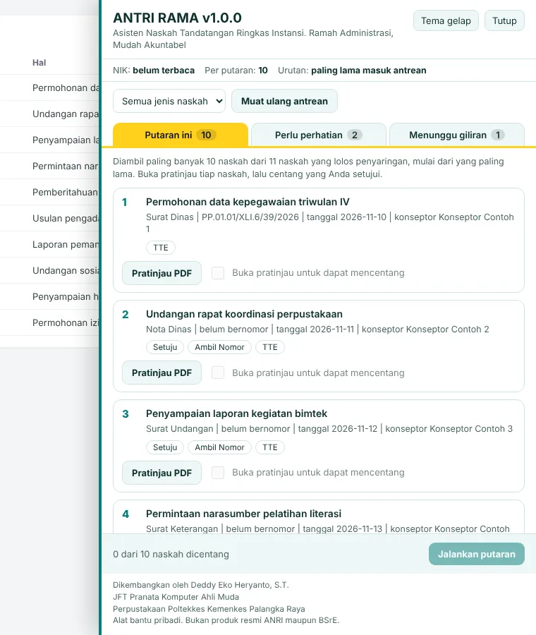

Key Phrase tidak disimpan
Diketik sekali per putaran, hanya dipakai untuk permintaan TTE ke SRIKANDI, lalu dilepas dari memori. Tidak masuk log, penyimpanan, atau layanan lain.
Ekstensi Chrome untuk pejabat penandatangan SRIKANDI
ANTRI RAMA mengambil naskah dari daftar Tandatangan Naskah, mulai dari yang paling lama menunggu. Anda membaca dan mencentang. Setelah itu Setuju, Ambil Nomor, dan tanda tangan elektronik berjalan berurutan untuk seluruh putaran.
Asisten Naskah Tandatangan Ringkas Instansi. Ramah Administrasi, Mudah Akuntabel. Gratis, lisensi MIT. Bukan produk resmi ANRI maupun BSrE.
naskah dibaca dan dicentang pejabat
Halaman ekstensi Chrome: Chrome tidak mengizinkan situs membuka alamat ini lewat tautan. Salin, buka tab baru (Ctrl+T), tempel (Ctrl+V), lalu tekan Enter.
chrome://extensions/Alurnya sama dengan yang Anda kerjakan di SRIKANDI. Bedanya, setiap langkah dijalankan untuk seluruh putaran sekaligus, bukan diulang per naskah.
Daftar Tandatangan Naskah dibaca. Naskah yang belum giliran Anda disisihkan. Naskah bermasalah dipisahkan ke tab Perlu perhatian: tanggal lebih dari 180 hari, jabatan penandatangan berbeda dengan jabatan Anda sekarang, sifat Rahasia, atau dilindungi OTP.
Paling banyak 10 naskah teratas tampil, urut dari yang paling lama masuk antrean. Kotak centang baru aktif setelah pratinjau PDF naskah itu dibuka. Tidak ada tombol pilih semua.
Status SETUJU dikirim untuk setiap naskah yang dicentang, sama dengan tombol Kirim di Form Penandatangan.
Untuk naskah yang Anda tandatangani pertama dan belum bernomor. Sebelumnya Anda menyetujui peringatan bahwa nomor otomatis tidak bisa diubah kembali, sekali untuk seluruh putaran.
Key Phrase diketik sekali. Tanda tangan dikirim satu per satu dengan jeda, seperti fitur tanda tangan banyak naskah SRIKANDI. Key Phrase dilepas dari memori setelah putaran selesai.
Hasil tiap langkah per naskah tampil di panel dan tercatat di log, tanpa NIK dan Key Phrase. Bila berhenti, putaran berikutnya melanjutkan tanpa mengulang langkah yang sudah berhasil.
| Langkah untuk 10 naskah | Manual per naskah | TTE banyak naskah SRIKANDI | ANTRI RAMA |
|---|---|---|---|
| Membuka dan membaca naskah | 10 kali buka detail | 10 kali buka detail | Pratinjau di satu panel |
| Setuju | 10 kali | 10 kali, manual | Sekali jalan untuk semua yang dicentang |
| Ambil Nomor | 10 kali dengan konfirmasi | 10 kali, manual | Sekali konfirmasi, berjalan berurutan |
| Key Phrase | 10 kali | 1 kali | 1 kali |
| Bila satu naskah gagal | Ditangani satu per satu | Tetap lanjut ke naskah berikutnya | Berhenti total, laporan per naskah |
| Naskah lama, beda jabatan, Rahasia, OTP | Tergantung ketelitian | Ikut terpilih bila dicentang | Dipisahkan otomatis, diproses manual |
Semua gambar diambil dari uji di Chrome dengan SRIKANDI tiruan. Nama, nomor, dan NIK pada gambar adalah data contoh.

antri-rama.chrome://extensions/ (salin dari kotak kuning di atas) dan nyalakan Mode pengembang di kanan atas.antri-rama.ID ekstensi ANTRI RAMA selalu nkjjdpaiglgmfncekmmahfiabeacnadc. Bila di halaman ekstensi muncul dua kartu ANTRI RAMA, hapus yang lain.
Ekstrak versi baru ke folder yang sama, timpa isinya, lalu klik ikon muat ulang di kartu ANTRI RAMA dan tekan F5 di SRIKANDI.
Diketik sekali per putaran, hanya dipakai untuk permintaan TTE ke SRIKANDI, lalu dilepas dari memori. Tidak masuk log, penyimpanan, atau layanan lain.
Panel dan seluruh tindakan berjalan di ruang terisolasi ekstensi dengan shadow DOM tertutup. Skrip lain di halaman, termasuk skrip pihak ketiga, tidak dapat membaca isi panel.
NIK dibaca dari Form TTE yang tampil di layar Anda, atau diketik sekali. Disimpan di memori peramban dan hilang saat Chrome ditutup. Di layar selalu tersamar.
Token sesi dibaca dari lalu lintas SRIKANDI di tab itu dan dikunci. Bila muncul token lain, ANTRI RAMA berhenti dan meminta halaman dimuat ulang.
Hanya enam alamat SRIKANDI yang boleh dipanggil: daftar, detail, pratinjau, Setuju, Ambil Nomor, dan TTE. Pengiriman naskah tidak termasuk.
Tidak ada layanan AI, server pihak ketiga, atau analitik. Semua permintaan langsung ke SRIKANDI dari Chrome Anda.
| Pengaturan | Pilihan | Keterangan |
|---|---|---|
| Jumlah naskah per putaran | 1 sampai 10 | Batas atas 10 dikunci. Putaran kecil memudahkan membaca dan membatasi dampak bila ada kegagalan. |
| Urutan antrean | Paling lama masuk antrean, atau tanggal naskah | Bawaan: waktu naskah masuk ke daftar Anda. Tanggal naskah bisa diisi mundur oleh konseptor. |
| Jeda antarpermintaan | 1, 2, atau 3 detik | Bawaan 1 detik, sama dengan fitur tanda tangan banyak naskah SRIKANDI. |
| Filter jenis naskah | Di panel | Putaran hanya berisi satu jenis, misalnya Surat Keterangan, agar lebih cepat dibaca. |
| Tema | Terang atau gelap | Di panel dan halaman opsi. |
ANTRI RAMA mengirim permintaan yang sama dengan tombol di SRIKANDI, ke alamat yang sama, dengan NIK dan Key Phrase pemilik sertifikat. Tanda tangan tetap dibuat oleh sistem SRIKANDI dan BSrE. Pemakaian alat bantu ini sebaiknya mendapat persetujuan pimpinan dan unit kearsipan instansi Anda.
Tombol itu menandatangani banyak naskah yang sudah disetujui dan bernomor. ANTRI RAMA juga menjalankan Setuju dan Ambil Nomor, menyaring naskah bermasalah, dan berhenti total bila ada yang gagal.
Putaran berhenti di naskah pertama yang ditolak. Tidak ada percobaan ulang otomatis, sehingga sertifikat tidak terkunci karena percobaan berulang. Setuju dan nomor yang sudah berhasil tidak diulang di putaran berikutnya.
Tata Usaha atau Sekretaris belum membuat format penomoran otomatis untuk jenis naskah itu. Putaran berhenti sebelum TTE. Minta format dibuat, lalu jalankan lagi.
Karena tanggalnya lebih dari 180 hari, jabatan penandatangan di naskah berbeda dengan jabatan Anda pada naskah terbaru, sifatnya Rahasia, dilindungi OTP, atau datanya untuk Ambil Nomor tidak lengkap. Naskah ini perlu diputuskan langsung di SRIKANDI.
Penandatangan sebelum Anda di urutan naskah itu belum selesai. Panel menyebut nama penandatangan yang masih ditunggu.
Buka satu naskah di Tandatangan Naskah sampai Form TTE tampil, atau ketik NIK di jendela putaran. NIK hilang dari memori saat Chrome ditutup.
Ada token sesi lain di tab yang sama, misalnya setelah login ulang. Tekan F5 di SRIKANDI, lalu buka panel lagi.
Tidak. Ekstensi hanya berhubungan dengan srikandi.arsip.go.id, api.arsip.go.id, dan s3.arsip.go.id.
Edge memakai mesin yang sama dengan Chrome dan mendukung pemasangan lewat edge://extensions, tetapi ANTRI RAMA baru diuji di Chrome.